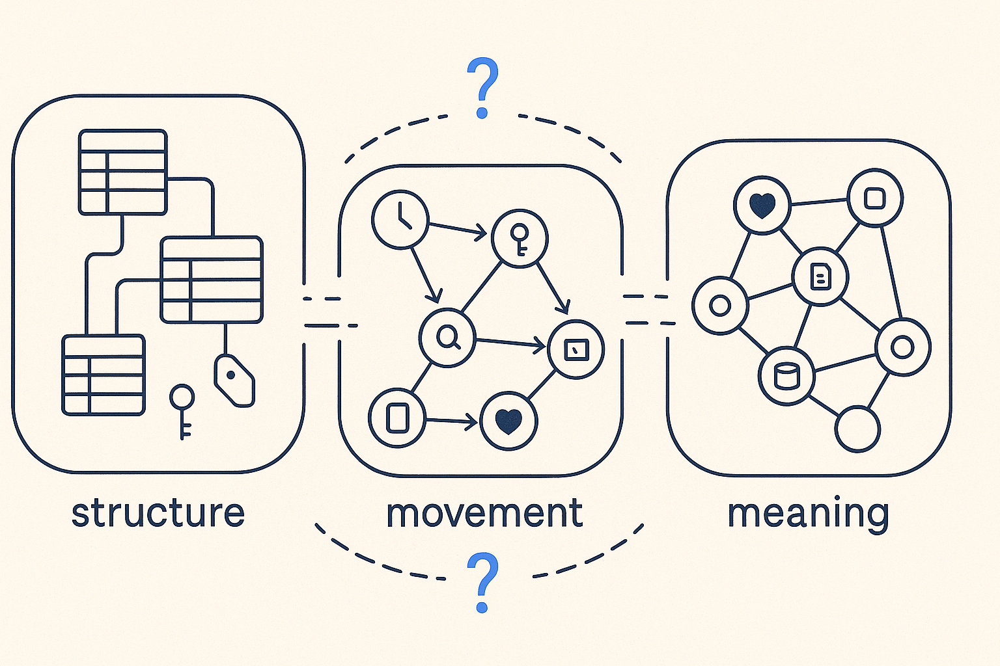
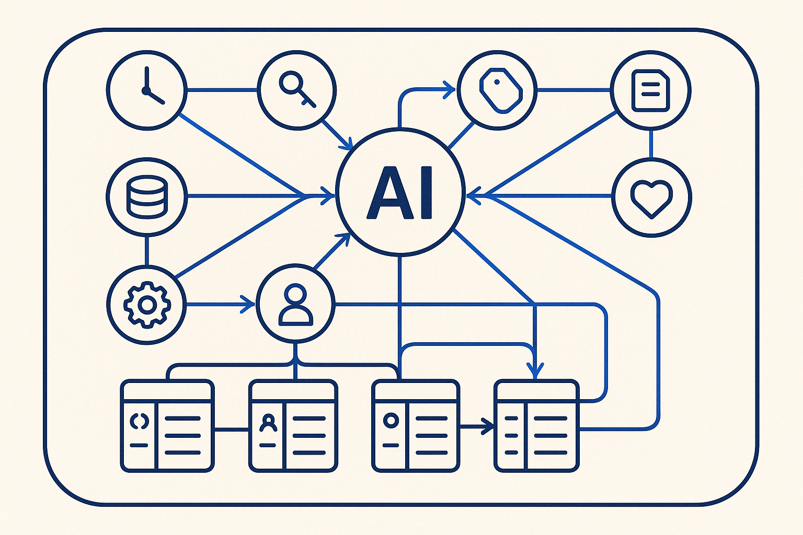

Overview
The impasse
For years, one thing was never made clear: the difference between data modeling (structure) and data movement modeling (transformation). It’s the hard part — and the classic modeling tools never solved it. Each tool claimed a slice; nobody held the whole.
Data modeling
Entities, attributes, keys, relationships. A world of its own.
Transformation modeling
How data actually moves and changes. A separate world — and where the tools fell short.
Knowledge
Semantics, business meaning, AI-readability — bolted on afterwards, never integrated.
Everyone models pieces. Nobody models the whole. That’s the impasse.

Why modeling came back
Data modeling felt like something from a previous generation. Then AI arrived, and one thing became clear fast: for AI, a solid data model is essential. Structure is back on the table.
But a data model is no longer enough. We have to model our knowledge. That’s knowledge modeling — structure, movement and meaning in one.
The process is stuck too
It’s not only the model. Scrum processes cost far too much time: too many meetings, without clear progress or results. The way we work around the model is as fragmented as the model itself.
So cut the meeting time and be honest with each other: what value are we adding, and are we doing it the right way? Do we need to retrain ourselves to speed up? Ask it out loud.
The attitude that comes with it: don’t accept delays, stick to agreements, no excuses. Prepared meetings, clear owners, results you can point at. Structure the knowledge-gathering process too — not just the data.
The example app shows it: the whole path from question to model to knowledge is itself a model. Structure the work, and the meetings get shorter and the results get real.
The breakthrough
One way of modeling that unites structure, movement and meaning in a single, AI-readable model — the breakthrough that pulls a fragmented field out of its impasse.
AI isn’t added afterward here — it’s built in. The model is readable by AI, and AI helps you model: generation and validation, both.

| Layer | The old world — fragmented | BTM — unified |
|---|---|---|
| Structure | Data model, in its own tool | Part of one model |
| Movement | Transformation / ETL, separate | Part of one model |
| Meaning | Semantics as a loose layer | Integrated — knowledge engineering |
| AI | Added on afterwards | AI-native: readable + models with you |
| Knowledge | Locked inside a tool | Open, config-driven, file = truth |
Old wine in new bottles?
“Data modeling is back” is a sentiment, and the old-school modeling vendors smell it. Watch for the ones dusting off the same 2005 canvas and re-labeling it AI-ready.
The larger ones earned very well on expensive licenses and maintenance contracts while investing the bare minimum in keeping the tool current — classic vendor lock-in, where the shops that paid the most used the least: three people touching ten percent of the canvas, unable to leave.
So don’t buy the bottle again. Build the app yourself, on your own requirements: vibe-code it from clear specs, reuse only the fraction of functionality you actually used, and generate the diagrams from AI skills, rules and the underlying metadata — not from a licensed canvas. Don’t repeat the lock-in mistake. Use the money for your tokens. 🙂
Why be this blunt? Because the alternative is staying in the old world: paying for outdated tools, or burning tokens on chat with no structured vault behind it — and falling behind the smaller, smarter organizations that already made the shift.
What BTM actually is
Data modeling is back — but as part of a bigger whole. Breakthrough Modeling is for disciplined people who think in structures, and who can turn what they learn into something a machine can run.
Working together to model an IT landscape that only grows in complexity — the business data structures and the data flows through it — needs a new approach and new skills. And the point isn’t to model it for the abstract thinkers alone. We have to model the complexity and share the knowledge at every level: visualize it, and sharpen how we communicate it, so everyone can see the same structure.
And it’s not only about modeling. It’s a different attitude: getting things done. Less talking about the model, more building it — in the open, in small structured steps that compound.
Underneath it sits one thing: integrity is the basis of success — integrity with others, and with yourself. Say what you’ll do, do what you said, and be honest about what’s working and what isn’t. Structure without integrity is just paperwork.
The inputs are the real work: investigating existing data structures, interviewing the business, reading the existing rules, and mining the knowledge in the data-modeling books. To scale it, AI generates the questionnaires for domain experts, and the knowledge workers curate the answers rather than rubber-stamp them.
The output isn’t a diagram locked in a tool. It’s structured markdown and YAML, skills, rules and instructions — versioned in git, and readable by AI. From that source, the AI helps build the SQL transformations, the lineage and the impact analysis, and feeds the MCP servers where business users and auditors can ask their questions and get grounded answers.
Structure the knowledge once, in the open. Everything downstream — SQL, lineage, docs, answers — is generated from it and stays in sync. Modeling anew.
The model behind it
The metadata model underneath it is real and runnable: 268 tables across 16 subject areas — structure, transformation logic, temporality, quality, lineage, governance and knowledge, all as queryable data rather than code buried in tools.
MDDE — model-driven data engineering — is the generation side of this: a component of BTM, not the whole of it.
More than a data model
In this era it isn’t just a simple data model anymore. We model the structure and the transformations — but also the whole process: delivery, integration, migration, quality, the backroom, and how the system changes over time.
Systems that talk to each other in metadata: data contracts that are continuously monitored, deliveries with quality shipped alongside, delivery calendars, incidents modeled instead of buried in tickets, and data observability watching it all. And it’s versioned two ways — data versioning (bi-temporal) and model versioning, because sources and interfaces run different versions at the same time.
The result of all that modeling is stored as metadata — open, git-versioned, and accessible to systems, to AI, and through MCP servers to stakeholders who can simply ask their questions and get grounded answers.
A new attitude
Structure only pays off with the right way of working. Breakthrough Modeling is also an attitude: extreme ownership, full accountability, discipline, radical clarity — and getting things done, with integrity, and with fun.
It runs on challenging the default, finding the essence first, decomposing and recombining the best of what came before — don’t reinvent the wheel. And on fact-based, data-driven decisions, shifting the check left, and experimenting fast: design thinking, fail fast, vibe-code a friendly interface over the metadata.
Continuous learning is no longer optional. The field moves too fast — the whole team and the stakeholders keep learning, supported by structure: spaced repetition and flash cards as metadata, so we stay sharp with AI instead of dull. Reclaim the time now lost to inefficient meetings and spend it on getting sharper.